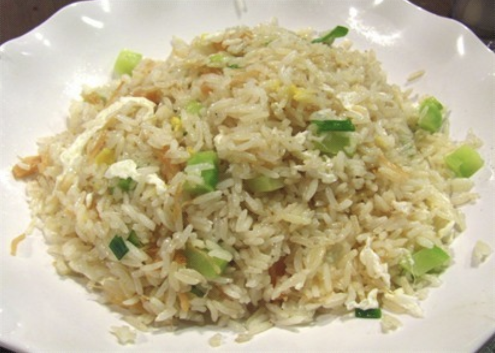

#19 - FRIED RICE WITH EGG WHITE AND DRY SCALLOP - 瑶柱蛋白炒饭

You often see this dish often in Cantonese restaurants. My family loves it very much and it is always a treat when I make it at home.
INGREDIENTS:
- 400g cooked rice / 1 cup uncooked long grain rice
- 2 egg white
- 2 (10g) dry scallop
- ½ cup chopped broccoli steam / green vegetable stem
- 1 green onion, chopped
- 1 tsp chicken powder
- ½ tsp salt
- Oil for cooking
Directions:
- Cook rice with equal volume of raw rice and water. When done, let cool and loosen the rice.
- Rinse the dry scallop in water, soak dry scallop 4 hours, or overnight in just enough water to cover the top.
- Cook the soaked scallop in a small saucepan with the soaking water.
- Stir occasionally while cooking, breaking apart the scallop to small threads.
- When the liquid has all evaporated, remove from heat and set aside for later use.
- Trim and cut broccoli / green vegetable stems into small pieces.
- Blanch in hot water with some salt, vegetable oil. Set aside.
- Beat the egg white.
- Heat the wok to hot. (Make sure the wok is very hot). Add oil and coat the wok completely. Pour out the excessive oil into a metal or ceramic bowl.
- Put the egg white into the wok; stir-fry the egg white a bit, then add the cold rice.
- Stir-fry vigorously in low flame to let the rice heat up. Add some water if the rice is too hard.
- Add all other ingredients and mix well.
- Add the vegetable, salt and chicken powder (optional), stir-fry a bit more and serve.
(Serves 1 person)
Note:
- The rice made for fried rice should be cooked with less water than usual to keep its texture. Often it is necessary to add extra water during frying. The finished fried rice should be fluffy, tender, a bit chewy, but not soggy or hard.
- I love to serve this with XO hot sauce.